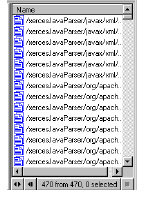

To query your source code
1 From the Categories pane, select the entity type you want to query.
The entities for that type appear in the Results window.
2 Select one or more entities in the Results window.
3 Do one of the following:
• In the Queries pane, select a query.
• Choose a query from the Queries shortcut menu.
The resulting information appears in the Results window.

Use the scroll bars to navigate through the list of entities. Selecting an entity displays related information in the status bar at the bottom of the model browser.